Middleman allows a designer to craft the design components in native material
Private web server for in-browser testing
DRY code for consistent coding of front-end partials
Workflow that Works
App Framework
Consume compiled CSS into Asset Pipeline
Final production optimization happens in framework with Grunt and Middleman's asset pipeline
Capistrano deployment of production application
Core Offerings
Visual and User Experience Design
Tech Discovery and Feasibility
Responsive, Front-end Pattern Libraries
CMS Development
Ngaged Software
NYU Global
NYU Explores Distance Learning
Students needs access to course material outside the classroom. Students should be able to leverage the work of other students and engage with the professor more directly.
Teachers need tools to annotate course material and to evaluage student engagement.
Institution needs their archive of course material to be searchable and indexable as well as maintain enrollment numbers.
Core Development Team
Built Django Python Framework
Required contract front end resources
NYU Integration with Sakai
Sakai provides a flexible systems for teaching, learning, research and collaboration
Sakai lacks rich classroom interactions for student engagement
NYU Integration with Sakai
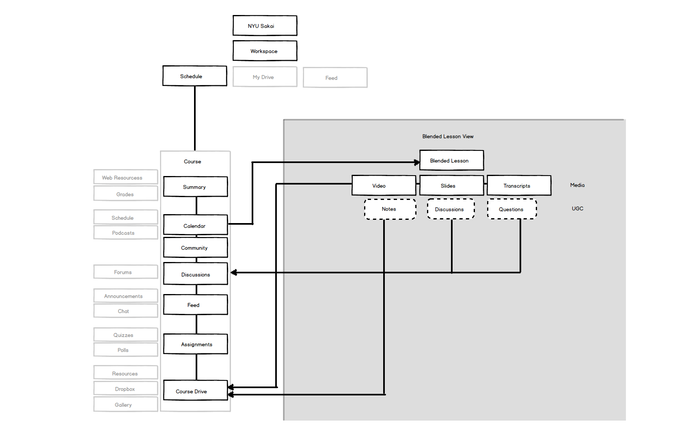
Phase 1
Develop component kit for the UI
Define responsive modules with pattern library and Sass
Give developers tool that could be used in future iterations
Phase 2
Revise user experience based on updated feature set
Adapt key user interactions for native mobile client
Give UX designers tools for communicating with developers
Responsive
Focusing on the Student Use Case
Responsive
There is no default size or orientation
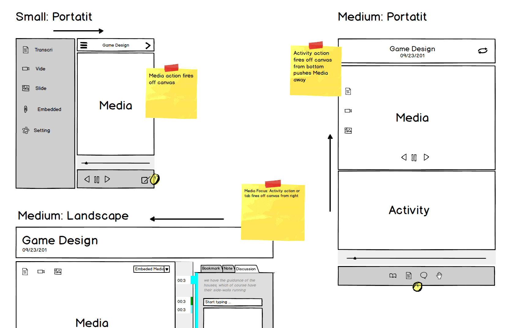
UI has to respond to a number of devices
Developed a strategy that involved grouping similar interactions into families
Focued on Primary interactions that set off a chain of smaller events
Responsive
Bookmarking is Primary interaction
It sets off Notetaking, Discussions and Questions
It is the student Entrypoint into the content
Prototyping
Mechanical Wireframes
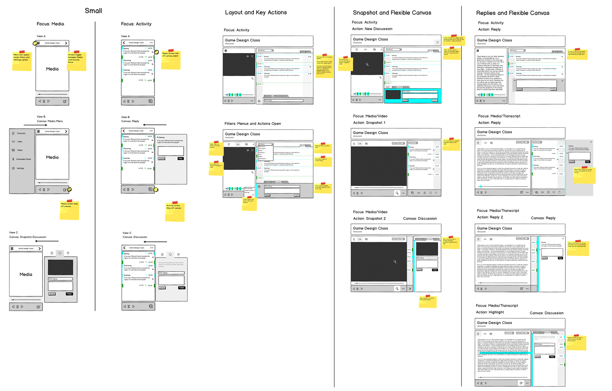
A single user story contained too many unique wireframes with notation
A single prototype with user guidelines can do the same job for several user stories
Prototyping
How does it move?
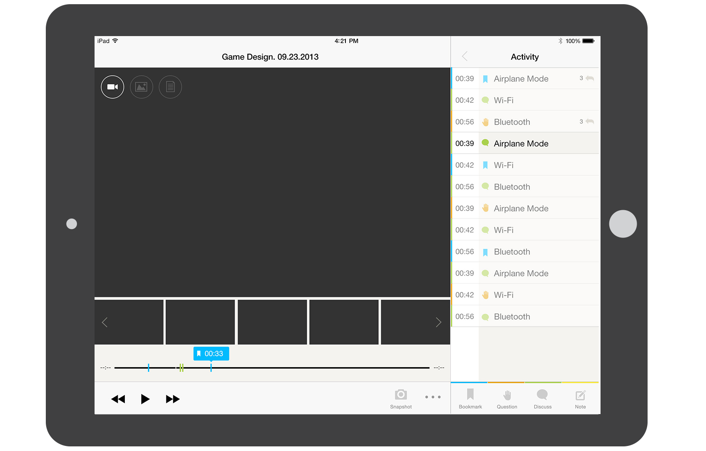
Responsiveness means nothing is static
How something moves defines the character of the thing
Off Canvas areas produce interstitial events that affect the personality of your application
Prototyping
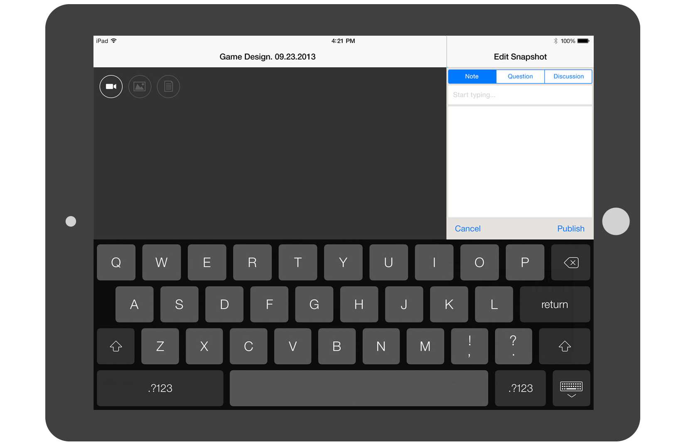
Allows you to respect surfaces and objects as they change size and relationship
Means same canvas elements may house several events depending on sequence
Provides new scenarios when we purposely stumble through an app, or try to break it
Pattern Library
A Million Little Pieces
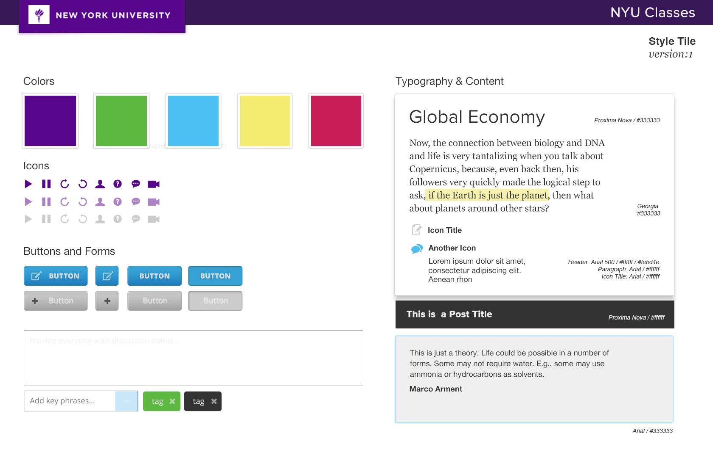
All Branded UI elements in one place
Developers are able to assemble complex layouts
Designers now work in partials and complement the development workflow
Pattern Library
Component thinking separates global rules from object rules
Start all of our frameworks with typography for vertical rules and grid for horizontals
Modules are defined by their function within the application
Pattern Library
Layout without classnames through view files
Grid sizing is defined in a view file
Based on Foundation and Semantic Grid
Pattern Library
Static pages within the Library allow for mini-prototypes
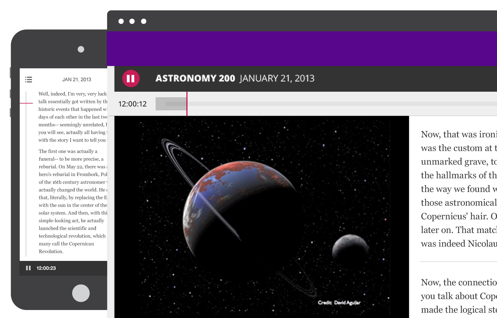
Timeline as an example has radically unique views at each breakpoint
Based on ergonimics, it runs vertically on mobile and horizontally on desktop
We build each component mobile first with a series of enhancements
Visual Mockups
A More Informed Polish
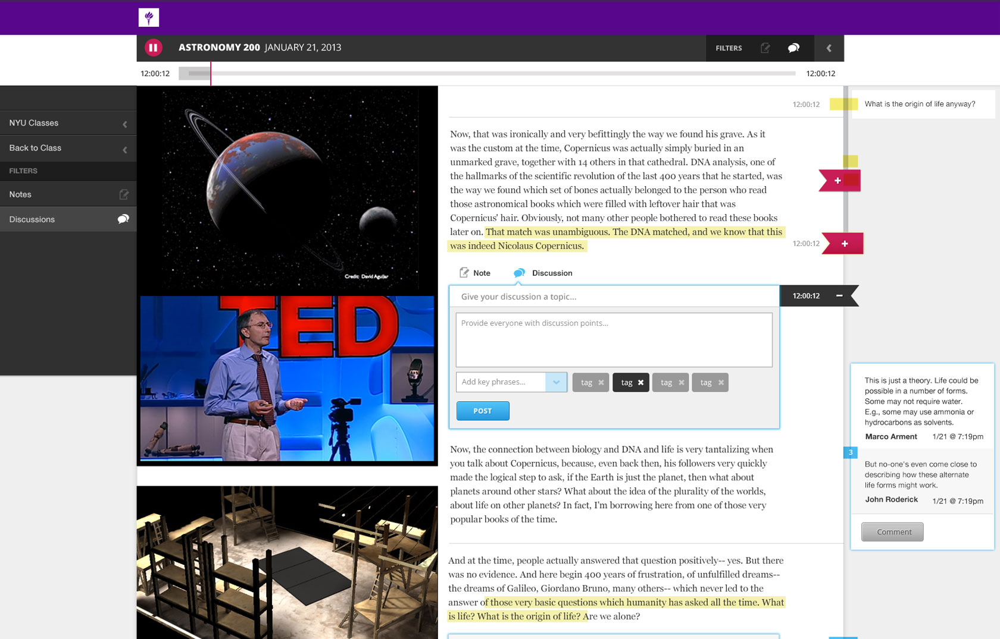
Design after Browser
Pick up where the code leaves off and design to the nuances and details
Visual Mockups
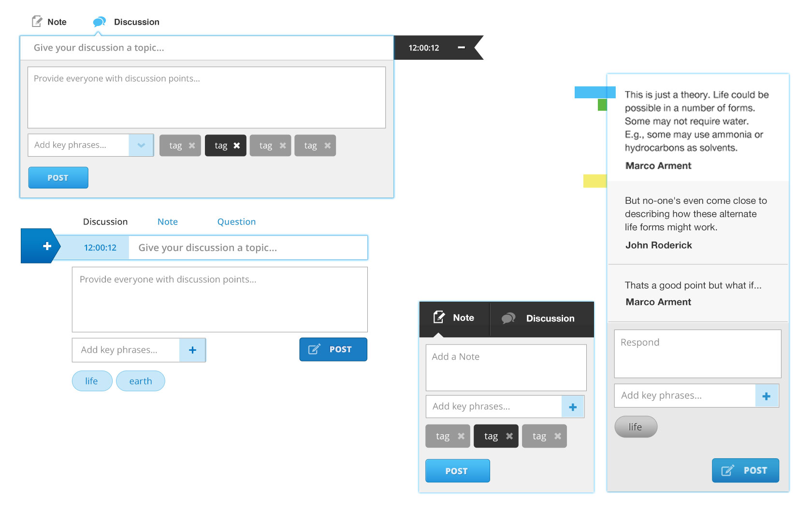
Provide alternate elements without creating extra variables
Element collage allows for art direction without code bloat
Visual Mockups
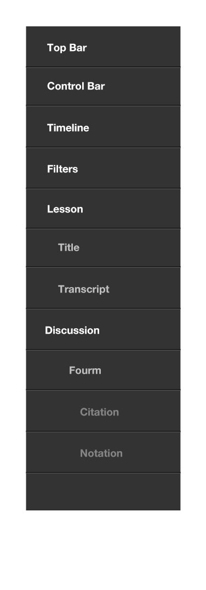
PSD Layer structure followed our source order
Object name spacing was also shared across all assets
Allow team members without code experience to contribute to the product
Results
Funding from more institutions based on this pilot program
Evangelized Sass best practices
Helped train team to communicate with outside vendors
Product was featured on TedTalks
Empowered UX team to communicate with Developers
Zeal
Zeal Academy
Zeal is a Social Learning Platform
Founded by John Danner & Sanjay Noronha
Analytics assist teachers in catering to high and low achieving students in each subject
Students are paired with other students with complementary skill sets
Encourages individual talents and learning styles
Design Team
Ambitious Visual Designs
Off-canvas and Responsive Interactions
Data Visualization
Development Team
Rapid Change Over of Resources
Responsive Front End built with Sass and Compass, and D3
Single page Ember.js App
Ruby on Rails Back End
Iterative Agile Process
Usability testing by pilot program participants
Phase 1: Student Application and Pattern Library
Defined the components for the pattern library
Built a pattern library starting with highest priority patterns
Integrated front-end patterns into applications framework
Phase 2: Teacher Dashboard with Data Visualization
Off-canvas Dashboard events
Data visualization using D3 JavaScript library
Defining Front End code standards
Onboarding of multiple developers onto the project
Process
Team Integration
Cloud-based test server with SSH deployment
Jira for Project management
Cloud-based test server for viewing and testing pattern libraries on any device
Built each component independently for resposiveness
Respected device ergonomics and navigation conventions
Iterations
D3 and SVG
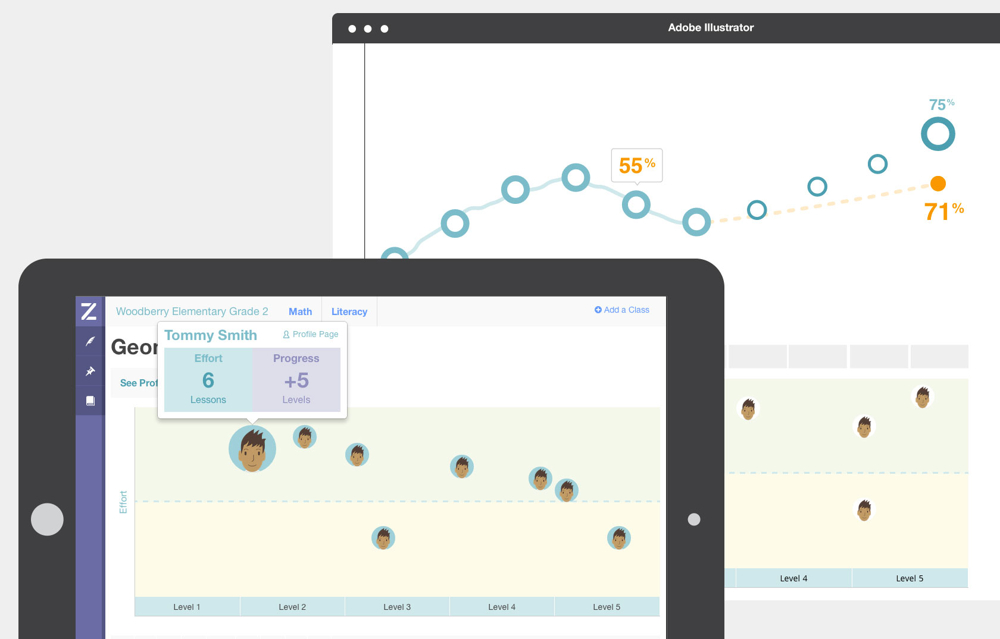
Domain language was established order to ensure reuse
SVG allowed designers to maintain art direction over individual components
D3 allowed developers to create element hooks that would produce dynamic graphing
Iterations
Graph Libraries
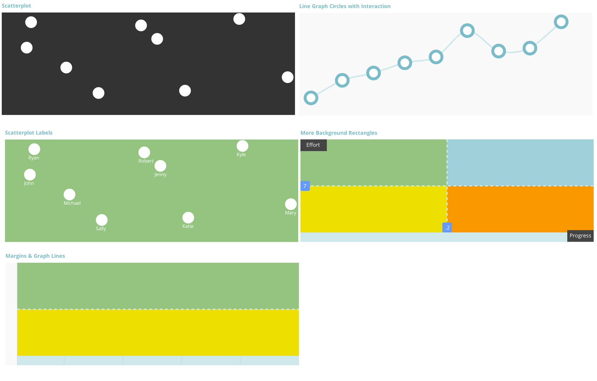
Created D3 Graph Libraries including.
Simple Scatterplot, Labels, Integrating Avatars, Customizable backgrounds, Margins and graphlines, Axis (with and without label, Basic Lines, Shapes integration
Iterations
//Create SVG element
var svg = d3.select(".scatterplot")
.append("svg")
.attr("width", w)
.attr("height", h);
// Set default background fill for SVG
svg.append("rect")
.attr("width", w)
.attr("height", h)
.attr("fill", "#f9f9f9");
// Add the data
svg.selectAll("circle")
.data(dataset)
.enter()
.append("circle")
.attr("cx", function(d) { return d[1]; }) // circle x coordinate (0 index of dataset array)
.attr("cy", function(d) { return d[2]; }) // circle y coordinate (1 index of dataset array)
.attr("r", 20) // radius of circle
.attr("fill", "#fff")
Iterations
// Create our circle elements
svg.selectAll("circle")
.data(dataset)
.enter()
.append("circle")
.attr("cx", function (d) { return d[1]; })
.attr("cy", function (d) { return d[2]; })
.attr("r", 20)
.attr("fill", "#fff")
.attr("stroke", "#73bdc8")
.attr("stroke-width", 2)
// Create svg element and append them avatars
svg.selectAll("image")
.data(dataset)
.enter()
.append("image")
.attr("xlink:href", "/assets/img/avatar-boy.png")
.attr("width", 40)
.attr("height", 40)
.attr("transform", function(d) { return "translate(" + ( d[1]-20 )+","+ ( d[2]-20 ) +")"; });
Iterations
Capistrano (Ruby Gem) for rapid and secure deployment from specified Git branch
Checked in code daily which was tested by a user group the following
Art: guides.github.com/introduction/flow
Results
Originally hired for two months and then stayed on for an additional 4 months to continue adding resolution to our framework and support.
Prototype helped increase the number of students in the user testing pool.
Helped train team to communicate with outside vendors
Delivered new features on a weekly basis to the testing team.
Helped to instruct the development team on basic D3 building blocks
Onboarding of multiple developers onto the project